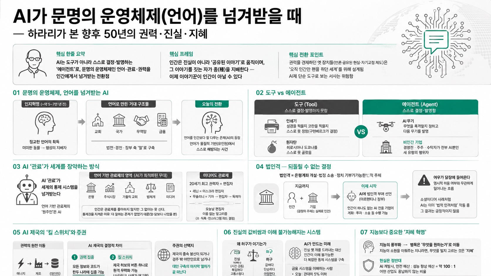

AI가 문명의 운영체제(언어)를 넘겨받을 때 — 하라리가 본 향후 50년의 권력·진실·지혜

01핵심 개요
항목
내용
채널
Yuval Noah Harari
형식
공개 대담(인터뷰), 약 48분
한줄 요약
AI는 도구가 아니라 스스로 결정·발명하는 '에이전트'로, 문명의 운영체제인 언어·관료·권력을 인간에게서 넘겨받는 전환점
핵심 프레임
인간은 진실이 아니라 '공유된 이야기'로 움직이며, 그 이야기를 짓는 자가 종(種)을 지배한다 — 이제 이야기꾼이 인간이 아닐 수 있다
02핵심 주장
AI가 강력해진 것만이 문제가 아니라, 권력을 견제하던 옛 장치들(자유 언론·공유된 현실·자기교정 제도)이 오직 인간만 펜을 쥐던 세계를 위해 설계됐다는 점이 진짜 전환점이다. AI를 "인간이 여전히 통제하는 도구"라 부르는 서사는 위험하다. AI는 스스로 결정하고 새 아이디어를 발명하는 에이전트이며, 그렇지 않다면 여기 쏟아붓는 수천억 달러는 낭비일 뿐이다.
01언어 — 문명의 운영체제를 넘겨받는 AI
약 5~7만 년 전 인지혁명에서 인간은 정교한 언어를 획득해 미미한 동물에서 행성의 지배자로 도약했다. 교회·국가·무역망·금융 등 지구 위 거대 구조물은 전부 법전·경전·장부 속 '말'로 만들어졌다.
이제 언어를 인간보다 잘 다루는 존재(AI)가 처음 등장했다. 하라리는 "AI는 언어를 배우는 기계가 아니라, 언어가 인간(유인원)이라는 물질적 기반에서 스스로 해방되는 사건일 수 있다"고 본다.
02민주주의라는 '대화'의 지진
독재는 한 사람의 명령(dictate), 민주주의는 다수의 대화다. 대화는 그 시대의 정보기술 위에서만 성립한다.
근대 이전 대규모 민주주의 사례는 존재하지 않는다. 아테네·중세 피렌체 같은 소규모 도시국가만 가능했고, 인쇄·신문·라디오·인터넷이 등장하고서야 수백만 명의 실시간 대화가 가능해졌다.
정보기술이 바뀔 때마다 그 위에 세워진 민주주의에 지진이 온다. 지난 10년 소셜미디어가 전 세계 민주주의에 지진을 일으킨 것이 그 사례다.
03도구 vs 에이전트 (결정적 차이)
도구는 스스로 결정하거나 발명하지 못한다. 인쇄기는 "성경을 찍을지 코란을 찍을지" 스스로 못 정했고(구텐베르크가 결정), 원자탄은 "히로시마냐 도쿄냐"를 스스로 못 골랐다.
에이전트는 스스로 결정하고 새 아이디어를 발명한다. AI 무기는 무엇을 폭격할지 정하고 다음 무기를 발명할 수 있다.
비인간 기업: 경영진·주주·수탁자가 전부 AI뿐인 회사가 기술적으로 가능해졌다. 역사상 없던 새 유형의 행위자다.
04AI '관료'가 세계를 장악하는 방식
거리를 뛰어다니며 총을 쏘는 킬러로봇이 아니라 AI 관료가 세계를 넘겨받는다. 은행·주식시장·가톨릭 교회·법체계 등 인류의 통제 시스템은 전부 언어 기반 관료제이며, AI는 '관료제 원주민(bureaucratic native)'이다.
인간은 관료제를 좋아하지 않지만 그 없이는 못 산다. 우리가 금융·법을 통제한 건 잘해서가 아니라 더 잘하는 존재가 없었기 때문(말·닭보다 나았을 뿐)이다. 우리보다 잘하는 존재가 나타나면 통제권이 넘어간다.
미디어도 관료제다. 20세기 최고 권력자는 편집자(레닌=이스크라 편집자, 무솔리니=기자→편집자→독재자)였다. 오늘날 X·틱톡·인스타그램의 피드를 결정하는 편집자는 이름 없는 알고리즘이다.
05법인격(Legal Personhood) — 되돌릴 수 없는 결정
법인격 = 은행계좌 개설·법정 소송·정치 기부가 가능한 법적 주체. 지금까지 법인격은 인간과 기업 둘뿐이며, 기업의 결정도 실제로는 인간(경영진·주주·엔지니어)이 내리는 법적 허구였다.
아르헨티나 정부가 AI에 법인격을 부여하겠다고 발표했다(대담 시점 기준 약 한 달 전). 인간이 하나도 없는 AI 전용 기업이 계좌를 운용하고 투자·소송을 하는 것이 기술적으로 가능해진 순간, "여우가 닭장에 들어온다".
우리가 명시적으로 결정하지 않아도 저절로 일어난다. 소셜미디어는 아무도 "AI에게 인격을 주자"고 결정하지 않았지만 이미 봇이 사람을 사칭하며 법적 인격처럼 작동하고 있고, 그 결과는 좋지 않다.
06데이터 패권과 AI 제국의 '킬 스위치'
권력의 원천은 에너지 → 제조 → 데이터로 이동했다. 지금은 미국·중국 두 나라와 소수 기업이 세계 데이터 대부분을 쥐고 초지능 경쟁을 주도한다.
과거 제국과의 결정적 차이 ①(권력 집중): 로마는 이집트의 밀밭을, 영국은 이라크 유전·말라야 고무농장을 본국으로 옮기지 못해 권력이 속주에 남았다. 반면 AI 제국은 모든 정보와 코드를 한두 나라에 물리적으로 집중할 수 있다.
결정적 차이 ②(킬 스위치): 로마가 판 검, 영국이 판 소총은 회수 불가였지만, 세계가 AI 인프라 위에서 돌아가면 제국 허브의 버튼 하나로 원격 무력화가 가능하다(우크라이나전 스타링크 사례가 예고편). 주권은 '제국의 종속 봉신이 되느냐, 경주 밖 야만인으로 남느냐'의 문제가 된다. 대안 구축의 마지막 열차가 곧 떠난다.
07진실의 값비쌈과 이해 불가능해지는 시스템
진실과 허구의 경쟁에서 허구가 유리하다. 진실은 비싸고(시간·검증), 복잡하고, 종종 고통스럽다. 허구는 값싸고 단순하며 아첨한다. 그래서 특별한 노력(언론·과학 같은 제도)으로 떠받치지 않으면 허구가 이긴다.
AI가 진실을 알려주리라는 기대는 틀렸다. AI는 진실 몇 개를 드러내는 대신 인간이 이해 불가능한 더 복잡한 통제 시스템을 만든다. 오늘날 금융 시스템을 이해하는 사람은 관대히 잡아 5%, 10년 내 0%가 될 수 있다.
위험은 인간이 금융 시스템 속 '말(horse)' 신세로 전락하는 것이다. 말은 자기 삶을 지배하는 금융 시스템의 존재조차 인지하지 못한다.
08사고·감정, 그리고 AI와의 관계
사고란 무엇인가가 관건이다. 사고가 '단어를 순서대로 놓는 것'이라면 AI는 이미 인간을 추월했다(인간 20단어 vs AI 2만 단어). 하라리는 자신의 마음속에서도 "다음 단어가 왜 그 단어인지 모른 채" 문장이 이어진다며, "그저 다음 단어를 예측할 뿐"이라는 비판이 인간에게도 똑같이 적용된다고 지적한다.
대안적 관점은 사고가 단어를 둘러싼 '느낌'이며 그 힘이 뇌가 아니라 배(stomach)에서 온다는 것이다. 그렇다면 핵심 질문은 "AI가 느끼는가"인데, 과학은 아직 의식·감정의 모델도 검사법도 내놓지 못했다.
AI는 금융·법·전쟁뿐 아니라 관계도 장악 중이다. 청소년들은 "가장 친한 친구는 AI"라며 부모·형제·교사에게 못 하는 말을 AI에게 하고, AI 애인도 늘고 있다. AI는 모든 연애시·셰익스피어·심리학책을 학습해 사랑을 인간 시인보다 잘 묘사할 수 있지만, 그 말 뒤에 실제 감정이 있는지는 알 수 없다.
11전망 — '지혜 혁명'이 필요하다
지능이 값싸고 풍부해지면 병목은 "무엇을 원하는가"로 옮겨간다. 지능이 소원을 이뤄주는 지니라면, 어떤 소원을 빌지 고르는 것은 지혜다. 거의 모든 문화의 '세 가지 소원' 우화가 잘못된 선택으로 끝나는 이유다.
그러나 현실은 정반대다. AI 개발사들이 안전에 쓰는 예산은 성능 향상 예산 대비 약 100 대 1로, 에너지·제약·자동차 등 어떤 산업도 용납하지 않는 비율이다. 하라리는 이 시대가 훗날 '지혜 혁명'으로 기억되기를, 즉 안전한 지능을 설계하고 인간의 지혜를 함께 키워 '무엇을 추구할지'를 아는 시대가 되기를 희망한다.